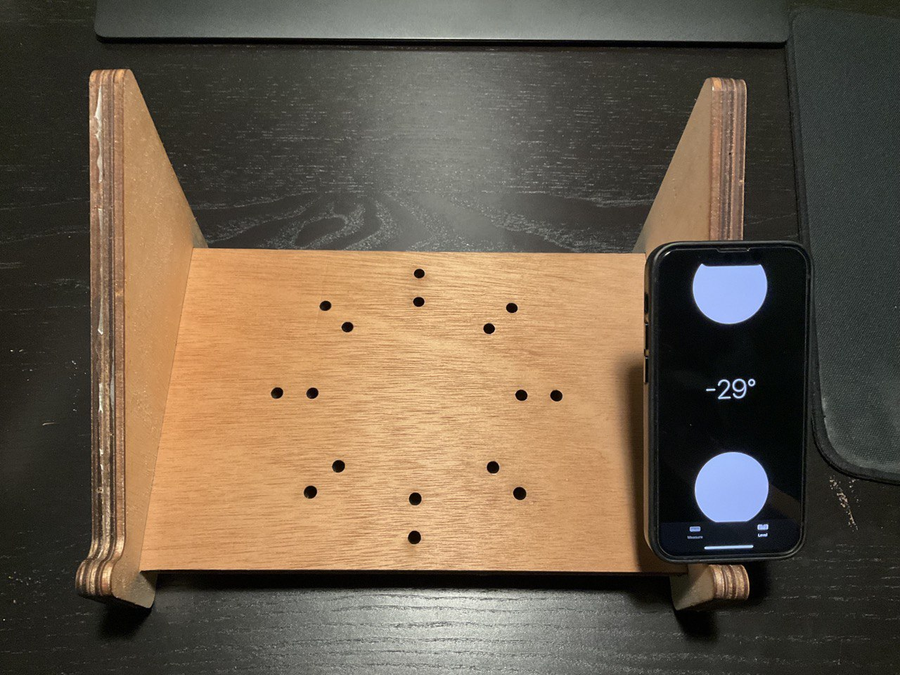
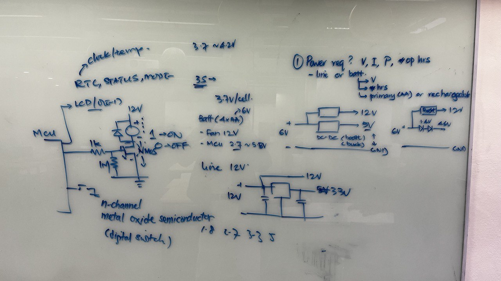
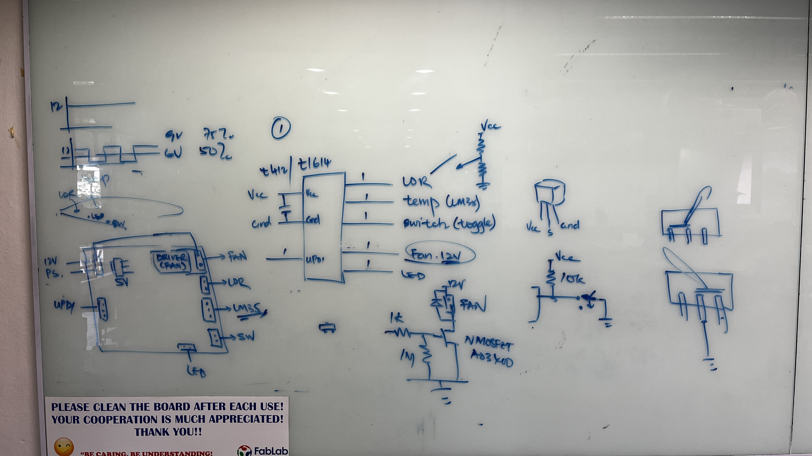
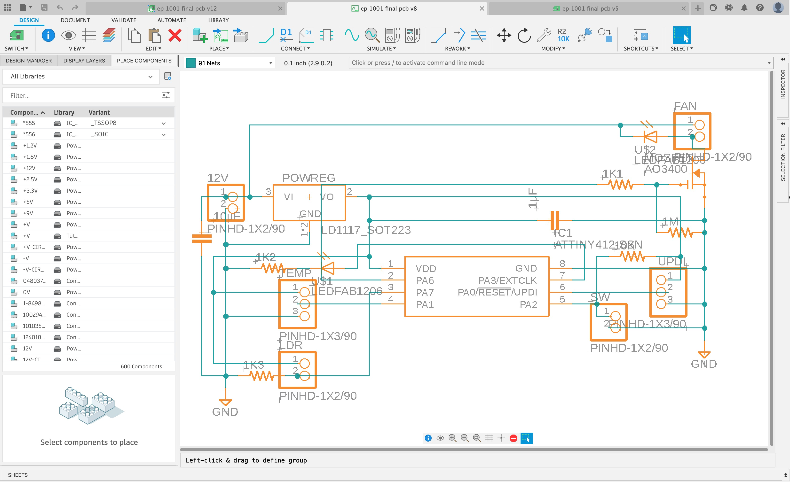
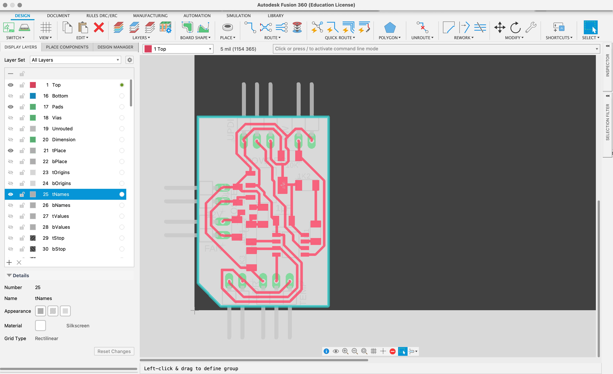
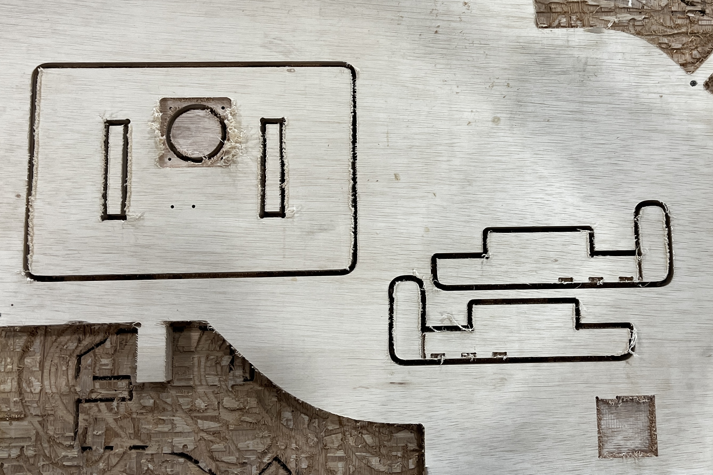
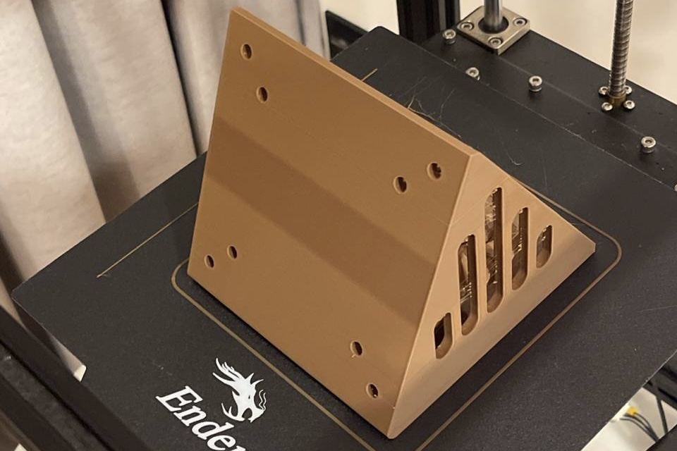
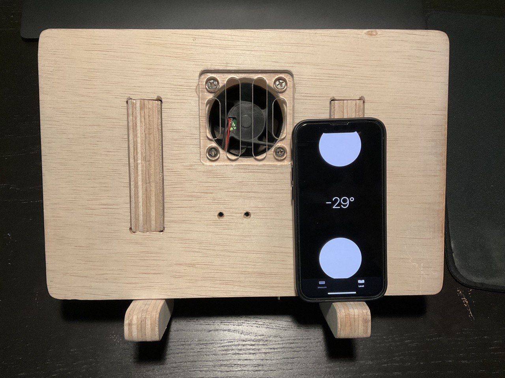
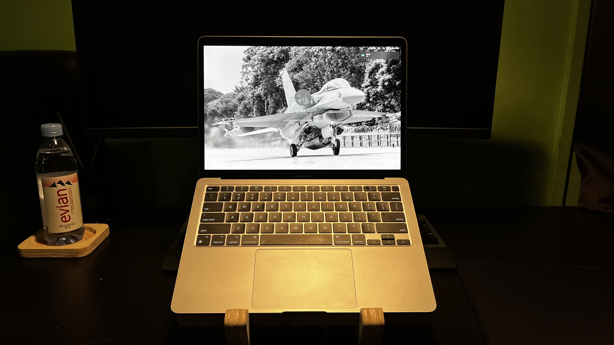
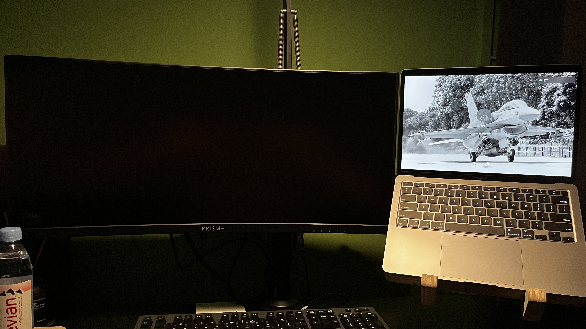

VESA Laptop Holder
I will be documenting the process of making my EP1001 final project here. The raw files can be found below as I go through what I have done and learned along the way.
CDIO Framework
I will be following the same structure of documentation as I have done in my EP1000 Final Project.
Conceive
I want to be able to mount my laptop onto the monitor arm for namely a few reasons:
- To save precious table space and make cleaning the table a little less fussy.
- To have the laptop display be elevated and off to the side of my main monitor. This would make it so that it will not strain my neck as much as compared to if the laptop was just placed on the table.
I had previously attempted to make a laptop stand with the VESA mount holes on the base of the stand so as to be able to attach it to my monitor arm. This however was a bad solution as not only did the base of laptop stand get in the way of the monitor arm movement, it was also made from 3 layers of lasercut plywood held together by glue; which is not very structuraly strong. Hence since I had the opportunity to learn 2D flatbed CNC in EP1001, I decided to work on this project of mine again.
Design
As part of the EP1001 final project requirements, which are to include:
- 2D and/or 3D designed part(s)
- subtractive manufacturing part (cnc)
- may include:
- molded or cast part(s)
- 3d printed part(s)
- laser cut part(s)
- an embedded microcontroller that I designed & fabricated
- input and/or output device(s) that interacts with user
- embedded program
I decided to have it such that the laptop holder will have more functionality as well. The different functionality includes:
- Be able to connect to a VESA monitor arm and not restrict the monitor arm movement.
- Have a cooling fan that can automatically turn on when it detect that there is laptop placed on the laptop holder and when a certain temperature threshold is reached.
- Have a master switch to override the automatic functionality in situation where I do not want the fan to be on.
|  |  |
To solve the detection of the laptop on the holder, I decided to use a Light Dependent Resistor(LDR). For temperature sensing, I decided to use the LM35 Temperature Sensor. I also decided to include an LED so that I can have it turn on when the master switch is turned on so I will know when the automatic functionality in operating. With this, I came up with the design:
I then designed the PCB using the Tiny412 as I only had 3 inputs and 2 outputs which would allow me to fully populate all of the microcontroller pins. I needed to include a voltage regulator (AMS1117) to step the power down from the 12 volts input to 5 volts for the microcontroller and the sensors. I needed the 12 volts input as the fan needed 12 volts to operate. I also needed an amosfet (AO3400) to toggle the fan on and off.
|  |  |
The coding was pretty straightforward and I learned how to write out my program along the way when I was testing my board and the different components. I only had to awkwardly use a multimeter to measure the voltage across the LDR when my laptop was on the holder.
Implement
Now comes the implement stage where I digitally fabricate my ideas to life.
|  |  |
On top of cnc manufacturing my pieces and 3D printing my adapter, I also laser cut out the grills and cover as well as milled out my PCB. While milling out my PCB outline, the copper board came loose and I had to just saw the outline of the board instead.

I also experienced many problems while soldering my PCB which resulted in it having to go through many "surgeries". Ultimately however, I got all of it to work.
Operate
As mentioned on top, this new laptop holder was designed to replace my laptop stand. Hence when used as a laptop stand, it put my laptop up in a very similar position as my previous laptop stand did.
It can be used as either laptop stand or a VESA laptop holder and mounted on a monitor arm.
|  |  |
Takeaway
I learned a great deal while embarking on this project. I met a lot of unexpected setbacks and hurdles which made what I thought was a simple project to become a really difficult and time consuming one. One of the first mistake I learned very quickly on was project planning. When I was modelling my laptop holder, I had initially set the wood cnc material thickness to be 18mm. With poor hindsight and lack of experience, I went ahead to laser cut out my acrylic grill and cover not knowing that when I had to later adjust my material thickness dimension to 24.5mm, it would result in my original laser cut pieces not fitting correctly. This happened because I lacked proper planning and tried to rush and do my work ahead of time. Secondly, I learned a better way to fit the laser cut pieces to the cnc pieces better. I had initially designed it to fit like a puzzle piece, similar to what I had learn in my Music Box project. However, I learned that the cnc could not mill out the small pockets very well but the piece that was fitted in through the slot fitted in very well. I also made a very careless mistake when manufacturing my part. I failed to mark out the parts of the board that were unusable which resulted in one of my piece having a weird aesthetic defect as the underside of the board had been cut before.

Due to time contrain, I was unable to recut my board and had to leave it be. I had another classmate who had not started manufacturing his pieces and I did not want to hog up the machine when it was my own oversight that made this mistake. Thirdly, during my PCB design, I failed to realise that the AMS1117 footprint I used was incorrect and this was due to me not checking the component data sheet. I did not realise that there were more than one footprint for the same chip. This caused me to awkwardly solder my AMS1117 in a way that it would not short itself. Addtionally, I made a mistake to not connect my fan to one of the Pulse Width Modulation (PWM) pin. I had originally wanted to fan to slowly spin up depending on the temperature read out however as I was unfamiliar with what I was doing, I ended up connecting the fan to a pin without PWM. Finally, I learned that surface mounted soldering was a lot easier if I were to first tin the pad with solder and then use a hot gun to place the components instead. If I had learned this earlier, I would have made lesser mistake which would have prevented me from burning off the copper on the board. It did not help that I dropped the board and 2 of the pin broke off along with the copper pad. I had to do a lot of "surgery" and troubleshooting on a what could have been a 30 minutes job. (You may be wondering why I did not just recut a new PCB and that was because we were running out of component and I was in a time crunch to complete everything. Additionally, the problems happened one after so I was being stubborn that I could fix the problem when it was happening.) At least now through this project and the many problems I faced, I am now equipped with the experience and knowledge to help me fabricate these parts again quicker and more efficiently. I also made a revision design model base on what I have learned during the fabrication process. It would include a bigger (140mm) fan that can operate on 5V allowing me to skip out on the power regulator completely. It is also designed such that the acrylic cover would slide in instead of being glued on. I hope to be able to make this better and updated designed someday (maybe during my last holiday in SP?).
RAW Files
You can find all my RAW files here: